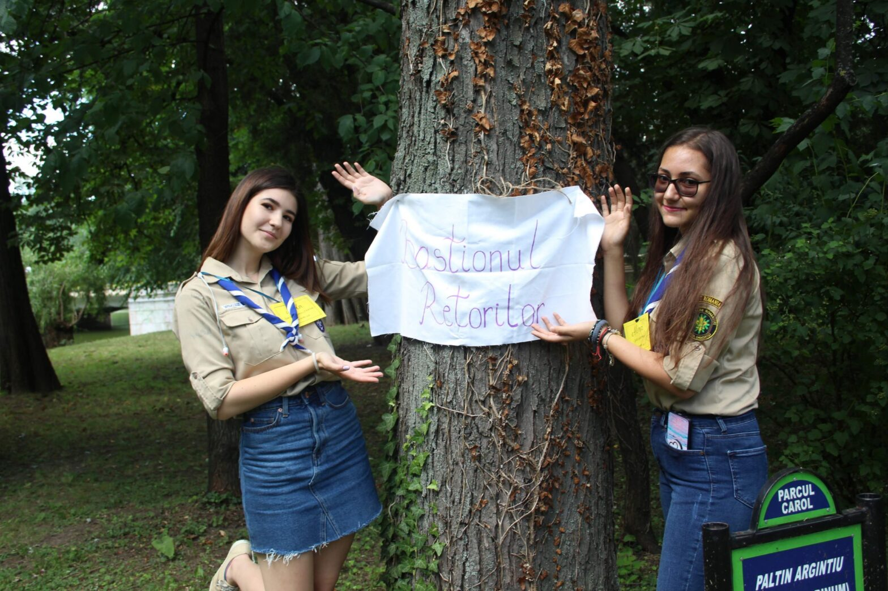
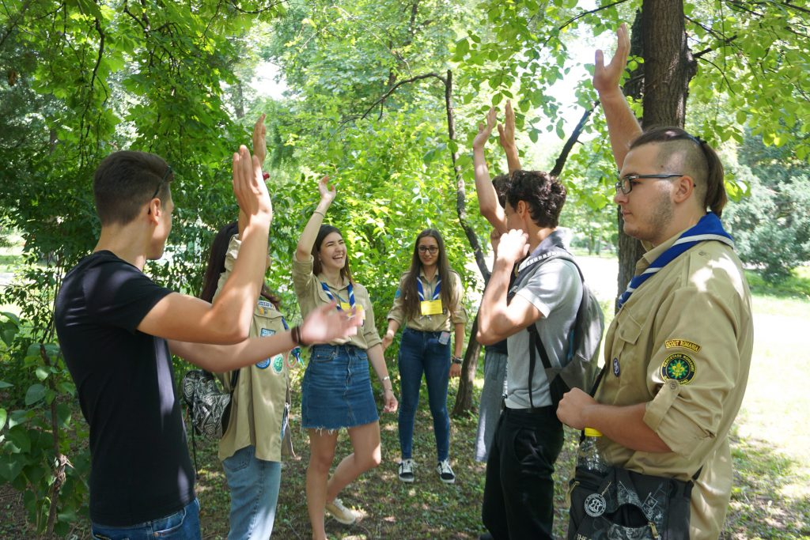

Socoteala de acasă vs cea din târg

Cea mai frumoasă experiență cercetășească a fost pentru mine când am ținut primul meu atelier la Ziua Cetății, țin și acum minte emoțiile pe care le-am avut. Aida a fost “micunealta mea secretă” reușind să îmi estompeze emoțiile cu puncte de vedere solide :)) Știu că pregătisem cu mult timp înainte ce voi face și cum mi-aș dori să se desfășoare timpul petrecut la atelier, dar evident că nu a decurs totul cum mi-am pregătit. Cu prima patrulă care venise am fost destul de rezervată încercând să păstrez totul conform planului.
“De ce îmi era frică tot n-am scăpat, dar am reușit să găsesc o soluție.”
La un moment dat, ne-a mai rămas timp liber și atunci a trebuit să caut prin memorie un joc interesant ce putea să îi atragă pentru a ne umple timpul. A fost momentul în care am improvizat și m-am calmat. De ce îmi era frică tot n-am scăpat, dar am reușit să găsesc o soluție. De atunci totul a decurs mult mai natural și am început să mă distrez și eu alături de patrule în timp ce se desfășurau activitățile. Jocul care m-a salvat din impas a fost twist, cel clasic, nu acela pe care obișnuiam să îl jucăm mai târziu după mult timp petrecut împreună cu cercetașii craioveni (dacă încă nu v-ați prins e cel cu cuțitul). Ziua Cetății a reprezentat pentru mine un eveniment care m-a apropiat de oamenii din centrul meu, dar și de cei din alte centre.

La finalul atelierelor am mers la “5 to go” unde ne așteptau liderii și unii participanți care terminaseră traseul. Cafeneaua era una stilată, în interior cu o canapea surprinzător de comodă și perne drăguțe așezate pe aceasta. Afară era o curte micuță, dar și aceasta primitoare. Copacii si florile erau admirate cu ușurință în timp ce te puteai bucura de mirosul de cafea îmbietor care venea din micuța cameră de lânga grădină. Un alt moment frumos a fost atunci când ne-am prezentat strigătele. În final, am strigat cu toții pentru fiecare centru local.
“A fost prima dată când am luat inițiativă și am vorbit deschis în fața câtorva persoane.”
Am realizat că nu totul iese cum ne propunem de la început, de aici vorba aceea cu “socoteala de acasă nu se potrivește cu cea din târg” și sunt mai deschisă când vine vorba de improvizat. Am observat că lucrurile mărunte pot fi valoroase și te poți bucura de ele la tot pasul. Natura este locul în care ne putem simți liniștiti, împăcați și pentru asta ar trebui sa îi fim recunoscători. Pentru mine Ziua Cetății este cea mai frumoasă experiență cercetășească de până acum, deoarece am observat că te poți distra și conducând un atelier, nu doar participând activ la acesta. A fost prima dată când am luat inițiativă și am vorbit deschis în fața câtorva persoane. Am învățat că cercetășia poate lega cele mai strânse prietenii pe care te poți baza oricând.